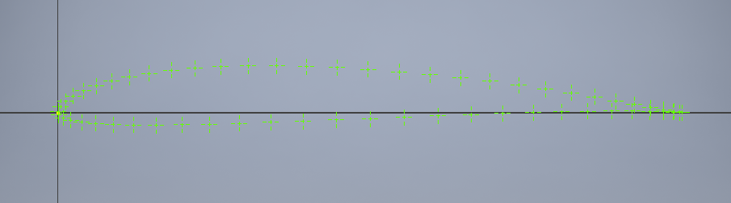
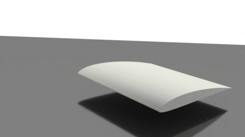
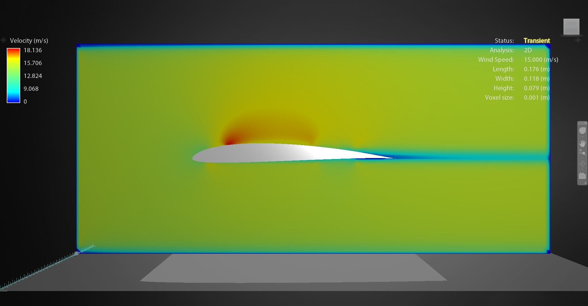

stumbling into aerodynamics
Home
Posts
About Me
Posts
9/14/16 - Some Interesting Airfoils
I've been exploring various types of airfoils in the past couple of weeks in order to get to know what kinds of air foils I can use for different applications. My goal is to be able to, for example, know exactly which airfoil I should use if I want to build a glider with a low Reynolds number.
My recourses for this type of research are scattered. In order to get a variety of views on airfoils, I've consulted online forums, peer-reviewed journals, and build logs.
Here is an example of how I document an airfoil I stumble on:
- I found a paper from the University of Illinois about airfoils in the context of model airplanes. How useful . . .
- Chapter 3.2 is about Thermal Duration Sailplanes, a topic in which I am interested considering my goal of efficiency for my future designs.
- The most popular airfoil in this section is the SD7037.
Now that I've found an interesting and useful airfoil, I research it in more detail. For this, I use a combination of my informational source on the airfoil, in this case the UIUC paper, and airfoiltools.com, a database of airfoil coordinates and basic performance plots.
The next steps in documentation are as follows:
- Create a folder with the name of the airfoil. Example: SD7037
- Create a .DAT file (actually just a text file). Naming example: SD7037.DAT
- Attain coordinates for the airfoil from airfoiltools.com and place these in the text file. Example coordinate file. These coordinates are given with a chord length of 1, but they can be scaled to any chord length needed. Because of scaling limitations in Inventor, the easiest way to do this to multiply all coordinates by the desired chord length in the Excel file (in Inches, the default unit in Inventor).
- Import the data into a Microsoft Excel spreadsheet to organize the coordinates.
- Import the Excel spreadsheet into a sketch in Inventor and interpret the coordinates as a set of points.

- Use a spline to interpolate the point and draw a curved, smooth airfoil.
- Extrude the airfoil to make it a three dimensional object and export it as a stereolithographic (STL) file for greatest accuracy and universal compatibility.

- Use Autodesk Flow Design to import the STL file and generate an aerodynamic analysis. Save this for later use in comparison to other airfoils.

For now, I am collecting and tentatively comparing airfoils, but in the future I will perform more rigorous tests and build physical models to see which airfoil is best for my future design of an aircraft.
-Aryn Harmon